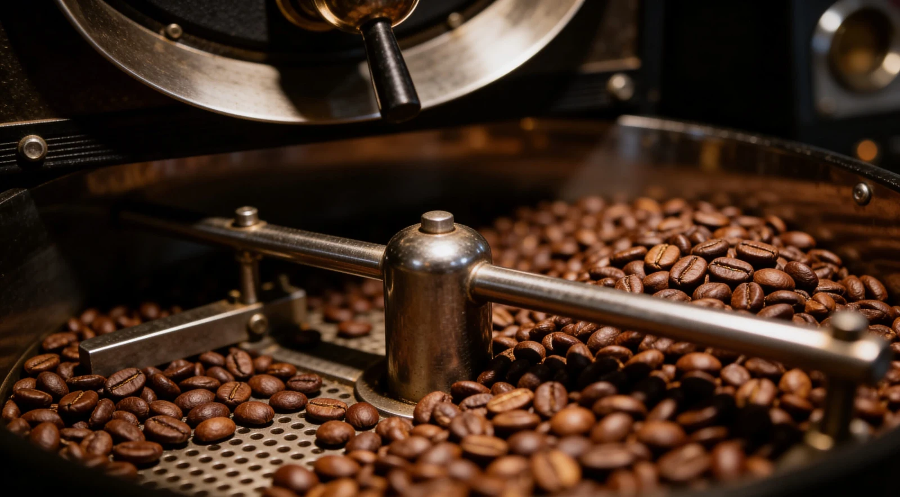

Tentang SajivastaDihidupkan oleh kopi.
Dihidupkan oleh kopi.
Dihubungkan oleh cerita.
Sajivasta adalah unit roastery PT. Berawal Dari Delapan, yang menghadirkan kopi Indonesia untuk kebutuhan Anda dan bisnis Anda.
Arah yang kami tujuKopi Indonesia.
Kopi Indonesia.
Karakter yang hidup.
Hubungan yang tumbuh.
Setiap daerah membawa karakter. Setiap proses memberi pengaruh. Dan setiap cangkir membuka ruang untuk menikmati keduanya.
Sajivasta memiliki visi menghadirkan pengalaman kopi berkualitas dengan identitas budaya yang kuat. Konsistensi rasa dan hubungan di dalam ekosistem kopi menjadi bagian dari arah yang kami bangun.
Dari petani hingga penikmat kopi, kami ingin ikut menghubungkan orang-orang di sepanjang perjalanan kopi Indonesia.

Origin / Roast / CupSebuah perjalanan,
Sebuah perjalanan,
banyak perhatian.
Asal biji, metode proses, roasting, dan cara seduh membentuk pengalaman di dalam cangkir. Kami mengajak Anda mengenal kopi melalui karakter yang dibawanya.
Jelajahi kopi kamiSatu percakapan, banyak kemungkinan.Mari temukan kopi
Bicara tentang kopi